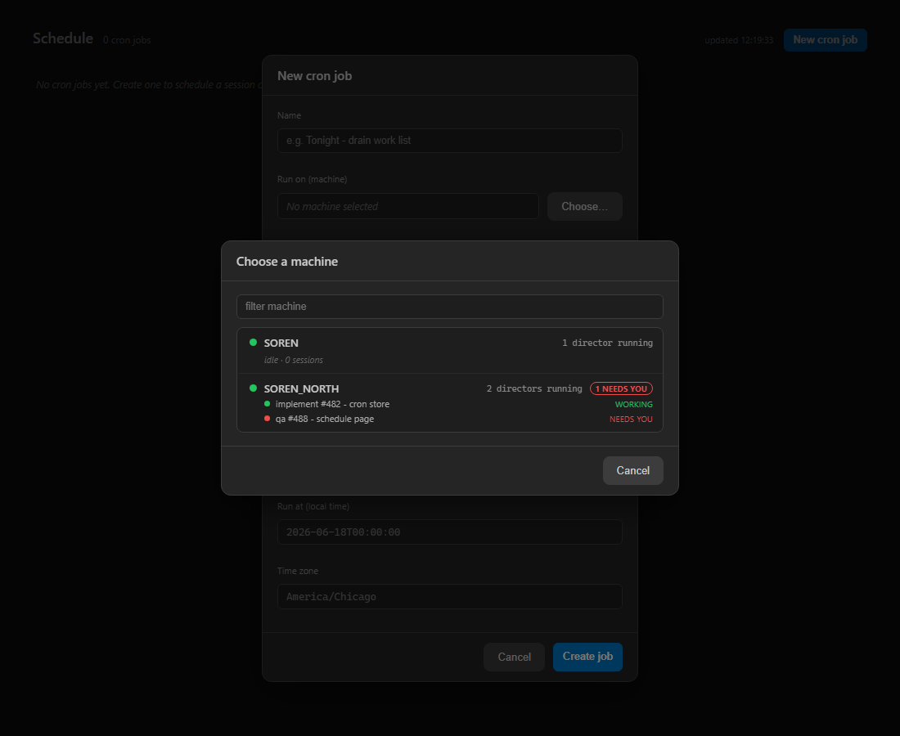

gateway_contracts): CronJobTarget changed from { DirectorId } to { Machine }. The run record (CronRunRecord) gained a Machine field (the target) alongside TargetDirectorId (the Director actually resolved to and used).gateway): new IDirectorTargetResolver / RegistryDirectorTargetResolver. It picks the first registered, reachable Director on the target machine; if none, it asks that machine's launcher (IDirectorLauncher -> RelayDirectorLauncher, which POSTs the existing /machines/{machine}/director/start relay from #331) to start one, then polls (bounded wall-clock timeout) until a Director registers.DirectorCronSessionStarter) and the work-list path (DirectorCronWorkListRunner) now resolve job.Target.Machine via the resolver. The work-list machine slot keys on the machine name. The engine records the resolved Director id in the run history.cockpit): the "Choose..." dialog now shows ONE card per MACHINE (collapsing that machine's Directors), previews the machine's running sessions and a NEEDS YOU flag, and shows "no Director running - one will be launched on demand" when the machine has none. The chosen value is the machine name.| # | Criterion | How verified | Result |
|---|---|---|---|
| 1 | POST /cron/jobs accepts target.machine; GET echoes it. A body pinning only a Director id is rejected (or the field is gone). |
The directorId field is GONE from CronJobTarget. CronJobEndpointsTests POST/GET round-trip a { machine: "workstation-A" } target through a real in-memory Gateway. CronScheduleTests.Validate_MissingTargetMachine_Fails proves an empty machine is rejected (the endpoint returns 400). |
PASS |
| 2 | The picker selects a machine (one card per machine, not per Director); the created job's target.machine is the chosen machine. |
Screenshot below (two SOREN_NORTH Directors collapse to one card). SchedulePickerTests: ...one_card_per_machine (2 machines -> 2 cards), ...persists_that_machine_name_in_the_created_job asserts the POSTed target.machine == the selected machine. |
PASS |
| 3 | With a reachable Director on the machine, the session starts there and the run record shows the Director used. | RegistryDirectorTargetResolverTests.Resolve_DirectorAlreadyRunning_... (resolves endpoint + id, no launch). CronRunEndpointsTests.RunNow_FiresAndRecords_WithFullRecordShape asserts the record carries Machine (target) and the resolved TargetDirectorId. |
PASS |
| 4 | No Director running -> engine asks the launcher to start one, waits for it to register, then runs; if the launcher cannot, the run records a clear not-started reason. | RegistryDirectorTargetResolverTests: ...LauncherStartsOne_RegistersAfterLaunch_Resolves (launch + poll -> runs), ...LauncherCannotStart_ReturnsError, ...LaunchedButNeverRegisters_ReturnsTimeoutError, ...OnlyUnreachableDirectorOnMachine_LaunchesAReplacement. |
PASS |
| 5 | Build clean (0 warnings); cron + cockpit tests pass. | dotnet build cc-director.sln -> Build succeeded, 0 Warning(s), 0 Error(s). Gateway.Tests: 769/770 pass (the one failure is the pre-existing, unrelated Vosk DictationEndpointTests). Cockpit.Tests: 63/63 pass. |
PASS |
Schedule.razor picker, rendered via bUnit (SchedulePickerTests.EmitProofArtifact_WhenProofDirSet) and screenshotted. One card per machine; SOREN_NORTH's two Directors collapse to one card with a session preview and a NEEDS YOU flag; the form field reads "Run on (machine)".
gateway container; it reuses the #331 launcher relay rather than changing it. No new blocking security rules. Supersedes the Director-picker approach in #495 / PR #498.I believe this is finished: all five acceptance criteria are met with the tests and screenshot above, the solution builds with 0 warnings, and the cron + cockpit suites are green (the lone failure is an unrelated pre-existing environment test).